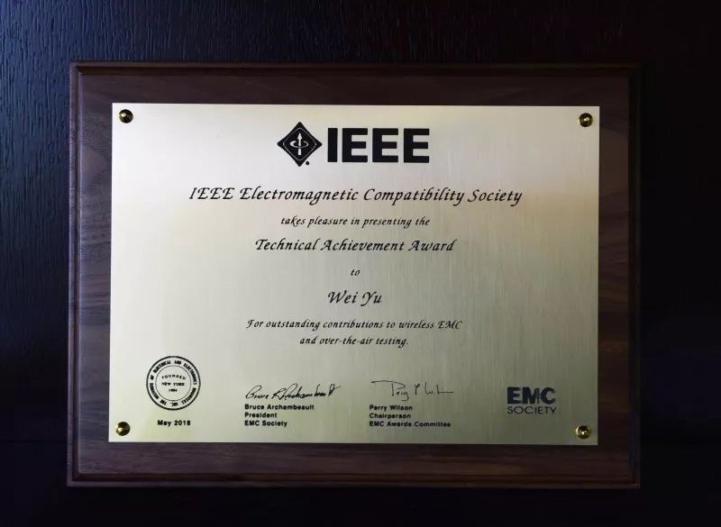
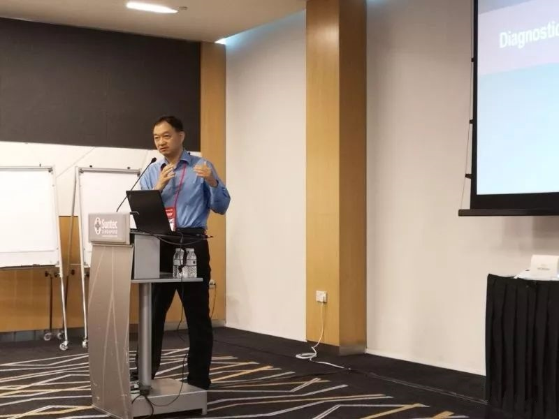

发布日期：2018-05
“2018 IEEE国际暨亚太电磁兼容联合会议及展览会”于5月14日至5月17日在新加坡举办并获得圆满成功。于伟博士、漆一宏博士及其团队参加了本次行业盛事并斩获多项荣誉。
查看全文“2018 IEEE国际暨亚太电磁兼容联合会议及展览会”于5月14日至5月17日在新加坡举办并获得圆满成功。于伟博士、漆一宏博士及其团队参加了本次行业盛事并斩获多项荣誉。
可用于4G及5G MIMO OTA测试的“辐射两阶段法”（Radiated Two-Stage，RTS方法）已正式被3GPP标准组织承认为测试标准。作为该国际标准的提出者，于伟博士、漆一宏博士在RTS方法的研究中起主导作用并做出了巨大贡献。IEEE EMC协会向于伟博士颁发了“IEEE EMC Society技术成就奖”，该奖项表彰在计算机、信息科学、工程学或计算机技术领域创新性、及推动本领域技术进步的贡献。
插图：于伟技术成就奖奖牌
不仅如此，漆一宏博士还主持并参加了本次展览会中与5G天线测量相关的1场Workshop及3场Special session。
插图：漆一宏博士主持workshop
随着5G时代的来临，公司凭借在测量理论、电磁环境、基础部件与材料、测试算法、系统集成等方面综合优势，在毫米波、相控阵天线、大功率天线测量等领域和是德科技（Keysight）、谷歌（Google）、高通（Qualcomm）等世界一流公司和国内国防基地与航天研究院开展了广泛合作。未来公司将始终专注技术研发，专注创新，专注为客户创造价值，携手业界同行为实现伟大的中国梦努力奋斗！